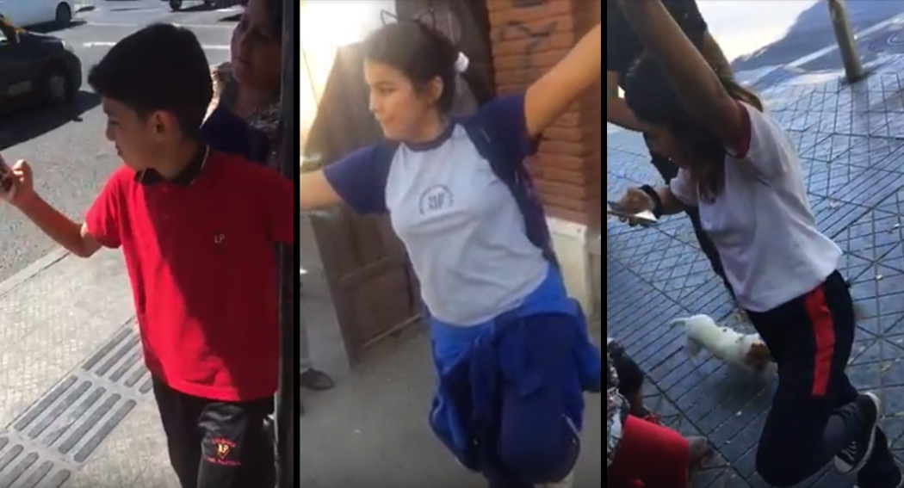
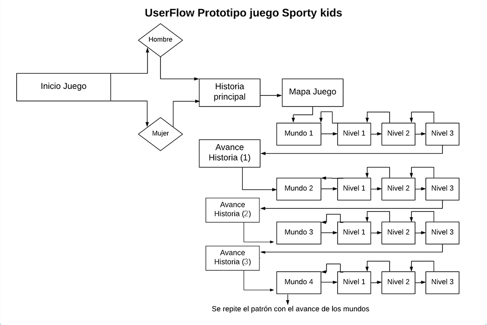
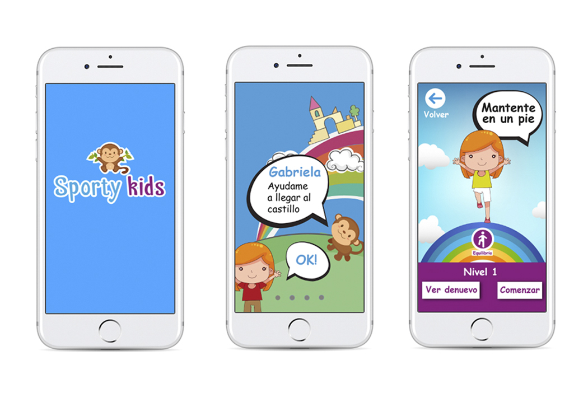

Sporty Kids

El proyecto que se presentó fue indagar en la problemática del sedentarismo de los niños pequeños



Sobre la investigación
Tras realizar entrevistas con niños pequeños (de 6 a 11 años), descubrí que los niños en su tiempo libre realizan actividad física de distinta índole pero en tramos cortos, a menos que realicen un taller (la mayoría no asiste a talleres). La mayoría de los niños maneja celular y computador,los ocupan en su tiempo libre, lo cual contribuye a su sedentarismo e inminente obesidad. La principal actividad que les gusta a la mayoría de niños y niñas es jugar, ya sea videojuegos, ver televisión y ambos comparten el gusto por realizar coreografías o bailes, los cuales los realizan solos o acompañados por amigos o hermanos.
Ideación
Para responder a las problemáticas se hizo una aplicación movil de un juego que consiste en realizar etapas de ejercicio. El primer nivel, que es el más básico consistió en ejercicios de equilibrio (debido a lo dificil de ilustrar los movimientos sólo se trabajó este para el prototipado). Para ello se trabajó con ilustraciones, donde la historia principal se trata de un personaje que debe llegar a un castillo. La aplicación invita a superar retos para que el personaje vaya avanzando.
Testing
Tras realizar dos sesiones de testing, me di cuenta en el primer testeo que los niños pequeños no seguían ordenes escritas (niños de 6 a 8 años). Sin embargo en un segundo testeo, donde observé a niños de 10 a 12 años realizaban las ordenes del juego y efectivamente se movian. Acá pueden ver el prototipo digital final.
Finalmente este reto dejo algunas tareas pendientes:
- Sección para compartir entre amigos e invitar a jugar.
- Generar mayor estimulación mediante la gamificación.
- Involucrar de mayor modo a los padres.
Para este caso de estudio además, habría que realizar una investigación más a fondo respecto a los tipos de ejercicios que debiesen realizar los niños, los cuales debiesen ser indicados por un profesional del área.